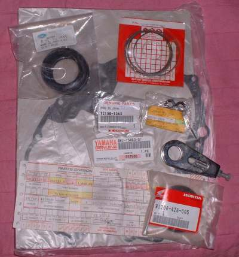
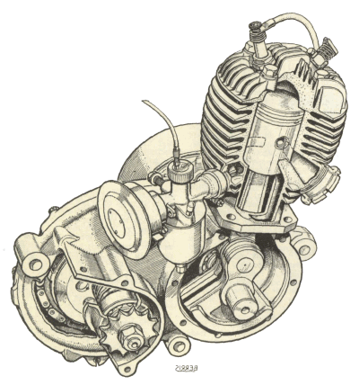
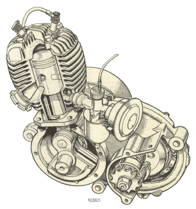

"Behold, thou desirest truth in the inward parts:
and in the hidden part thou shalt make me to know wisdom."
Psalms 51:6
¶ We all want the truest parts to replace our motorcycle's inward parts and in that thought is wisdom. There are basically four types of parts.
- OEM. Meaning "Original Equipment Manufacture."
- NOS. Meaning "New Old Stock."
- AfterMarket. Meaning parts made by someone other then the original manufacturer.
- Used Parts. Parts taken from a broken or wrecked motorcycle.
OEM parts cover every single part on the motorcycle. Every nut, piston, bolt and gasket. This costs the original manufacturer a lot of money but they have to do it to support the motorcycles the manufacturer makes. The down side is that these parts cost top dollar. The up side is that each part will fit and fit perfectly. Many times the best place to start your parts search is with the original manufacturer.
NOS parts are just OEM parts that are old. You might be getting them from the original manufacturer but more likely you will be getting them from some one who bought them from the original manufacturer. Some manufacturers sell off all parts that are older then a certain number of years, usually ten years. NOT all manufacturers do this, just some. They do this so they don't have to store parts that maybe no one will ever buy. The people that buy the old parts either think they will buy cheap and sell high OR they just truly love that engine or bike and want to keep it going as long as possible. Yes, people really do this. Shoot, I would buy all the old Trail-90 parts if I had enough money. Which I don't, unfortunately. I just love that bike. Anyway, people do that!
One problem with some NOS parts is their age. This is not so much a problem with steel parts because they are normally packed in special paper and plastic that is designed for long term storage. Rubber parts can be packed as well as steel parts but rubber just does not age as well as steel. Just something to think about if the part is twenty or thirty years old.
Aftermarket parts are made buy some one who thinks they can make a common, fast moving part at a great profit. Say an air cleaner or a piston or a valve. They do not have to make every part only the fast moving, high profit parts. Original Equipment Manufacturers have to make ALL the parts. High profit, low profit and even no profit parts. This means aftermarket people can price the part cheaper then the original and still make a good profit. Most times the aftermarket part will be just as good as the original. By law, if the aftermarket part is as good as the original, it will not void the original warranty. In other words if you replace your air cleaner with a cheaper aftermarket one, instead of an expensive OEM one your warranty is still good.
Used Parts usually cost one half of what a new part costs. There is nothing wrong with used parts. As one sign I saw outside an auto wrecking yard said "There's nothing wrong with used parts. You drove in here on them!" This is quite true, as long as the parts are not too used. A professional mechanic will most likely not use used parts because he must go and get them. If he pays a dollar for a two dollar part, adds 50 cents for his time, he will be charging you a dollar fifty for a used part. It makes much more sense to use a new part and charge the two dollars. However, for you, it makes great sense. Buy the part and save one half.
If the part is not available from the manufacturer you may have to buy used if you want to get your machine back on the road.
If you are innovative you can also find parts in very odd places. I once had a newer three cylinder Triumph come in for an oil change. The owner wanted to use the special oil the owners manual called for. It was Mobil 1 Racing 4T synthetic motorcycle oil. None of my regular suppliers carried it so I call the nearest dealer, who was 150 miles away. He didn't have any. Now what? I went on the oil manufacturers web site and lo and behold one of their dealers was Wal-Mart. I go down to their store and there it is. Some auto parts stores carry selected motorcycle parts too. Such as nuts, bolts, gasket paper, ignition points, batteries and the like. So be open to gathering parts from odd places.

Now we come to warranties. A warranty is only as good as what the guy who sells the part says it is. By that I mean the guy you buy the part from is the man that will decide if and how much of a warranty gets honored. What do I mean by that? Well, if the spark plug or whatever three dollar part you buy fails it is the seller that eats the price of the new part you get. Do you really think he can send a cheap part back and that the manufacturer will reimburse him? I wish it was true but it is not. On more then one occasion I have replaced a ten dollar inner tube that supposedly failed. No way the manufacturer paid me back. Oh he might have, I guess, but it just costs me too much to send a cheap part back. So I grit my teeth and back the part myself.
What about a more expensive part? Like a gear or maybe a bearing or valve? Well guess what. They may say they give a ninety day, or one year, or whatever warranty but when it comes time to make good you will find that the real truth of the matter is you didn't "install" the part right or the customer "Over revved the engine" or there was a New Moon and everyone knows you don't install that particular part under a New Moon! You get the picture? Some people may disagree with me but... !
Most electrical parts do not come with a warranty. There are a few exceptions to this but for the most part don't expect electrical parts to have a warranty.
 Parts Man Ramblings
Parts Man Ramblings I'm at my workbench working on an engine. I had the big, roll up door open and the day was bright, sunny and glorious. In walks two guys. One asks if I can get a piston for an old Suzuki B-120 from the mid 1960's. I tell him maybe. He asks how much and I say I don't know for sure but it probably would be around $120.00. He just goes ballistic. Starts to yell, rant and rave about how he only paid $50.00 for the bike and that Suzuki and I are just a bunch of thieves and robbers. He is throwing his hands up, turning red in the face and walking back and forth. I might have been worried except for the fact that I had a hammer in my hand and a 44 mag pistol under the counter so it was just funny. I'm good though, I don't say a word neither do I laugh.
He turns to has friend and says "Come on, let's go." and walks out. His buddy is somewhat embarrassed and says "Sorry!" and off they go.
Parts people have to put up with a lot of guff from people. Maybe it's because so many people seem to think that every 30 year old bike has lots of parts still available for it and that they will be real cheap. Alas, the piston for a thirty year old bike will cost as much as one for a three year old bike. Maybe it's because many people seem to think I am here only as a benefit to you. I'm just waiting and holding on to that part so I can give you a super cheap deal. Maybe it gives me a warm, fuzzy feeling inside... and then again maybe not.
Sorry folks, every motorcycle shop is there for one reason and one reason only. TO MAKE MONEY. If they can make you happy in the process so much the better. Just remember. No matter how popular the shop, if it does not make money it cannot pay it's bills and will go out of business.
Now I'm not saying don't buy from cheap internet or mail order places. I am saying if the shop gives you advice and it helps you with your repair you should buy your parts from them even if the parts cost more. They have to make money to pay the bills and bike shops have a lot of bills. Rent, special tools, banking charges, business licenses and taxes. The list goes on and on. It costs a lot of money to stay in business. In other words, find a local shop you like and support it. If you don't, the shop just might not be there when you need them.
It's like this. A young man comes into my shop and he has a question about his little Kawasaki G5 motorcycle. I answer his question and let him look at the parts Micro-fiche (This was in the days before the internet) Over the next few years I let him use the Micro-fiche dozens of times, gave lots of advice and once even let him work on his bike in front of my shop. Borrowed some tools as I remember.
Well, he finally needs to buy a part. A piston kit from Wiseco. I quote a price. Another shop, who would not give you the time of day for free let alone advice, beats my price by five dollars. Guess who he buys from? Your right, the other guy. The kid actually said to me that he knew I would want him to buy from the other guy so he could get the best price. Again, I'm good. I don't say a word. One would think that being given access to the Micro-fiche alone would have been worth the five dollars but I guess not. I never expected to make any labor money from this kid but I did think he would at least buy a part or two from me. Guess I thought wrong.
To complicate motorcycle parts is the fact that while many different models are made but there are relatively few actual bikes made in each model range. The push is for new, different and more powerful motorcycles. A car engine can be made in the millions over many years. A motorcycle engine may only have only a few hundred thousand examples made over a two or three year period. We the consumer have chosen speed over everything else. Speed costs money. How fast can we afford to go? Seems every year I run across people who buy a used, worn out, speed demon and are surprised at how much it will cost to get it going again. They really can't afford to go that fast.
If you are in a hurry and don't care about the cost buy your part from a local dealer for whatever type of motorcycle you own. If price is a big concern you can often save a substantial amount of money buying aftermarket parts if they are available. If your bike is old, often the only place you can find your NOS part is on Ebay or an internet dealer. Lastly, you just might find that special part at a good price at a salvage yard.

 |
 |
Copyright © 1999-2010 dansmc.com. All rights reserved.